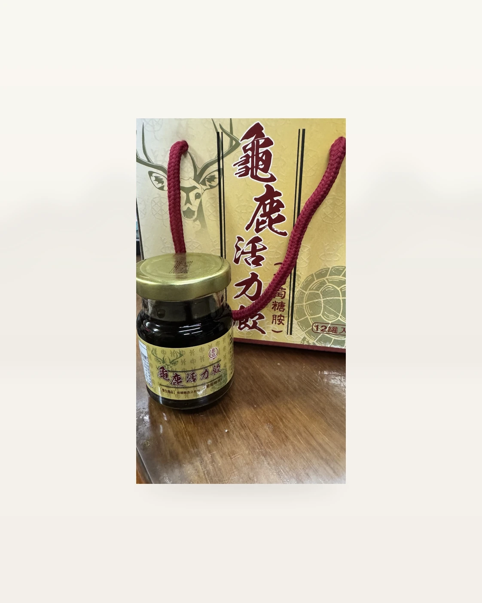
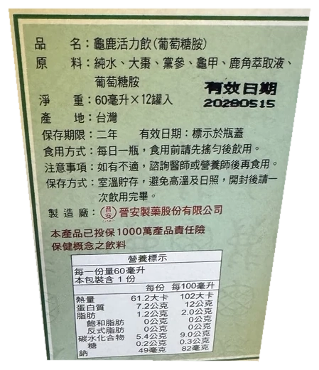

產品規格
60毫升×12罐／盒；使用原廠玻璃罐與金色禮盒包裝。
商品資訊
60毫升×12罐／盒；使用原廠玻璃罐與金色禮盒包裝。
如涉及個人體質、疾病、用藥或是否適合飲用，請先由專業醫療人員評估。
商品價格、現貨狀況及配送時間，歡迎透過仙加味官方 LINE 詢問。
原廠產品實拍


禮盒規格為60毫升×12罐入。查看原始禮盒照片
晉安製藥股份有限公司
臺灣／二年
新臺幣1,000萬元（原廠外盒標示）。
晉安製藥股份有限公司｜服務專線：05-2216025｜官網：www.ch-angmp.com.tw
| 營養項目 | 每份60毫升 |
|---|---|
| 熱量 | 61.2 大卡 |
| 蛋白質 | 7.2 公克 |
| 脂肪 | 1.2 公克 |
| 飽和脂肪 | 0 公克 |
| 反式脂肪 | 0 公克 |
| 碳水化合物 | 5.4 公克 |
| 糖 | 0.2 公克 |
| 鈉 | 49 毫克 |
商品規格與原廠資料可參考本頁；價格、庫存與訂購由仙加味官方 LINE 協助。